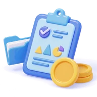

지원 전 CHECK
지원할까 말까 고민 중이죠?
일단 여기부터 같이 봐요!
키워드 체크와 셀프 점검을 통해 내가 지원 가능할지 미리 확인해요.
궁금했던 전형과 수업, 준비 과정까지 한눈에 정리했어요.
기본 대상
기본 자격을 보고, 아래에서 직접 체크해 보세요.
학력
학력 무관
학력과 상관없이 지원할 수 있어요
세부 기준(미취업의 범위, 졸업 유예 확인 서류 등)은 공식 모집 공고를 따라요.
스스로 체크
0 / 5 확인했어요
체크 항목은 지원 준비를 돕는 안내예요.
세부 자격은 공식 모집 공고를 확인해 주세요.
모집 프로세스 보러 가기
서류부터 최종 발표까지, 순서대로 확인해요.
STEP 01
서류 전형
지원자님의 지원 자격, 지원 동기 등을 확인하는 과정이에요.
STEP 02
테스트 전형
서류 지원이 확인되면 기본적인 AI 지식과 역량을 검증하기 위한 코딩 테스트를 진행해요.
코딩 테스트 면제지원 시 AI 관련 역량을 검증할 수 있는 포트폴리오를 제출하면 코딩 테스트가 면제돼요.
STEP 03
면접 전형 및 인적성 검사
- 면접 전형
- 앞선 테스트 전형에 참여한 방식에 따라 면접 유형이 나뉘어 진행돼요.
- 인적성 검사
- 온라인으로 응시하며, 지원자의 인성과 적성을 검사해요.
STEP 04
최종 발표
각 전형별 결과를 종합해 최종 합격자를 선발하고, 문자나 유선으로 개별 안내해요.
지원 혜택
들어오면 이런 걸 지원받아요배우는 동안,
이런 지원을 받아요
지원금부터 학습 장비와 취·창업 지원까지.
BENEFIT 01
교육지원금
교육지원금 최대 50만원 지원
광주 시외 거주자가 광주 시내로 거주지를 이동한 경우 주거지원비 최대 35만원 추가 지원

BENEFIT 02
프로젝트 지원금
프로젝트 기간 동안 쾌적하게 진행할 수 있도록 지원금을 제공해요.
BENEFIT 03
개별 노트북 지원
교육 기간 동안 사용할 수 있는
개별 노트북과 모니터를 대여해요.
BENEFIT 04
교재 및 실습 자료 제공
수업을 위한 교재와 실습 자료를
무료로 제공해요.
BENEFIT 05
프로젝트 전문 지원
완성도 높은 결과물을 낼 수 있도록
현직 멘토를 매칭해요.
BENEFIT 06
인턴십 기회 제공
우수 교육생으로 수료하면
이스트소프트 인턴십 기회를 제공해요.
BENEFIT 07
취·창업 지원
교육생의 취업과 창업을 전문가와 함께 지원해요.
BENEFIT 08
자격증 취득 지원
AI·IT·SW 자격증을 취득할 수 있도록 지원해요.
자주 묻는 질문
물어보기 애매했던 것들, 여기 다 모았어요궁금한 점,
바로 찾아보세요
-
A전공은 지원 자격에 해당하지 않아서
비전공자도 지원할 수 있어요. 수업은 AI 기초 역량부터 단계적으로 진행해요. 비전공자로 시작한 선배들의 이야기는
선배 후기에서 볼 수 있어요.
-
AAI 관련 역량을 검증할 수 있는 포트폴리오를 제출하면
코딩 테스트가 면제돼요. 포트폴리오가 없다면 서류 지원이 확인된 뒤 기본적인 AI 지식과 역량을 확인하는 코딩 테스트를 진행해요. 자세한 순서는
모집 프로세스에서 확인해 주세요.
-
-
A지원하시면 준비과정 VOD를 시청할 수 있는 LMS 이용 방법을 안내해 드려요.
-
A기수마다 전형 절차와 지원자 수가 달라 경쟁률에도 차이가 있어요. 자세한 내용은 인공지능사관학교 홈페이지의 해당 기수 모집 공고를 확인해 주세요.
-
A7기부터는
모든 수업이 오프라인으로 진행돼요. 교육 시간과 운영 방식은
인사교 알아보기에서 볼 수 있어요.
-
A하루 일과는
인사교 알아보기에서 볼 수 있어요. 실제 종료 시간은 [확인 필요]
시간 확인 -
A팀 기반 실무 프로젝트(PBL)를 중심으로, 토론식 수업과 팀별 실습, 발표 활동 등 다양한 방식으로 진행해요.
-
A반별로 전자 교안 또는 실물 교재를 사용하는 등 자료 제공 방식이 달라요. 수업자료는 무료로 제공돼요.
-
A수업을 실시간으로 녹화하고 있어서, 놓친 수업이나 복습이 필요한 내용을 다시 볼 수 있어요.
-
A학교 근처 식당을 이용하는 선배들이 많아요. 혼밥, 같이 먹기, 카페로 나눠 정리한
근처 식당 정보를 참고해 주세요. 식비 지원 여부는 [확인 필요]
확인 필요 -
-
A팀으로 함께 만드는 수업이 많아요. 처음엔 낯설었지만 적응했다는 선배들의 이야기는
선배 후기에서 볼 수 있어요.
-
A공가 제도를 운영하고 있어요. 진료확인서 등 증빙서류를 제출하면 관련 규정에 따라 공가 처리가 가능하고, 공가 인정 횟수에는 제한이 있어요.
-
A필요한 경우 재원증명서를 발급받을 수 있어요. 예비군 훈련 연기 가능 여부와 신청 절차는 병무청 확인이 필요하니, 훈련 일정이 나오면 병무청에 문의해 주세요.
-
A교육지원금, 프로젝트 지원금 등 지원 내용은
지원 혜택에서 확인해 주세요. 금액과 조건은 모집 회차에 따라 달라질 수 있어요.
-
-
A네, 수업 신청이 가능해요. 다만 개인별 지원금이나 참여 요건에 미치는 영향은 담당 상담사에게 확인해 주세요.
-
A네, 수업 신청과 참여가 가능해요. 다만 실업인정이나 구직활동 요건에 미치는 영향은 개인별 상황에 따라 다를 수 있으니, 수급 중인 고용센터에 미리 확인해 주세요.
-
A[팀 구성 방식 안내] 확인 필요 프로젝트마다 현직 멘토를 매칭해요.
-
해당하는 질문을 찾지 못했어요.
다른 검색어를 입력하거나 전체 질문을 확인해 주세요.